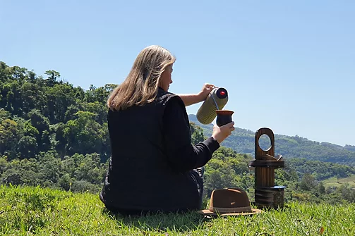
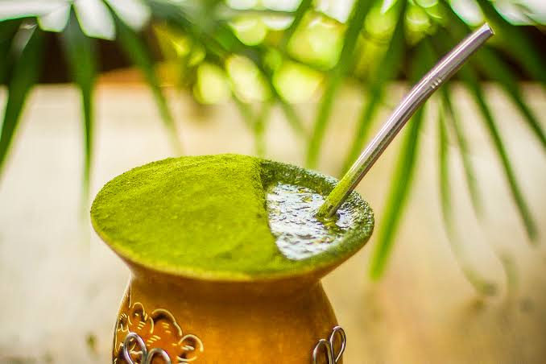
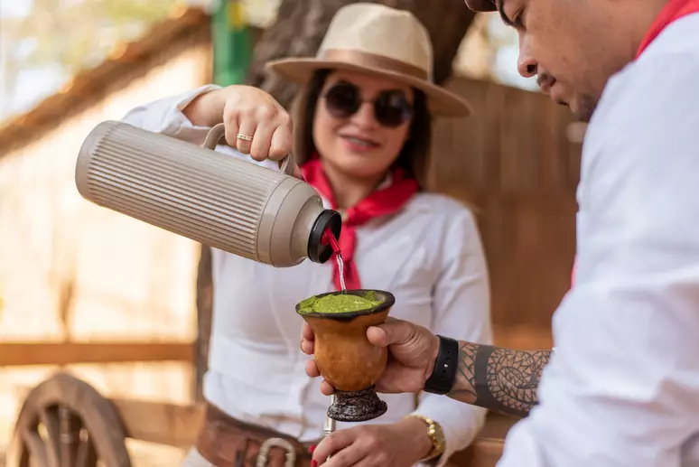

tradução cultural sobre o chimarrão
A tradução cultural é um conceito fundamentado na antropologia, nos estudos literários e nas ciências sociais que vai muito além da simples conversão de palavras de um idioma para outro. Trata-se do processo de interpretar, adaptar e ressignificar práticas, símbolos, tradições e valores de um determinad grupo humano para que possam ser compreendidos por outra cultura ou ao longo do tempo.

chimarrão como tradução cultural envolve a transformação de uma prática indígena sagrada
O chimarrão como tradução cultural exemplifica como um elemento sagrado de uma cultura é reapropriado, ressignificado e integrado à identidade de outra, perdendo parte de seu sentido místico original para se tornar um símbolo secular de socialização e pertencimento regional. motor de desenvolvimento econômico, urbano e social do estado.

Um elemento cultural forte cria um sentimento de conexão entre as pessoas. Quando os paranaenses preparam o chimarrão
A importância do chimarrão e da erva-mate para a identidade cultural do Paraná é tão profunda que se confunde com a própria criação do estado. A planta e a bebida não são apenas costumes regionais; são o DNA histórico, econômico e social do povo paranaense.
